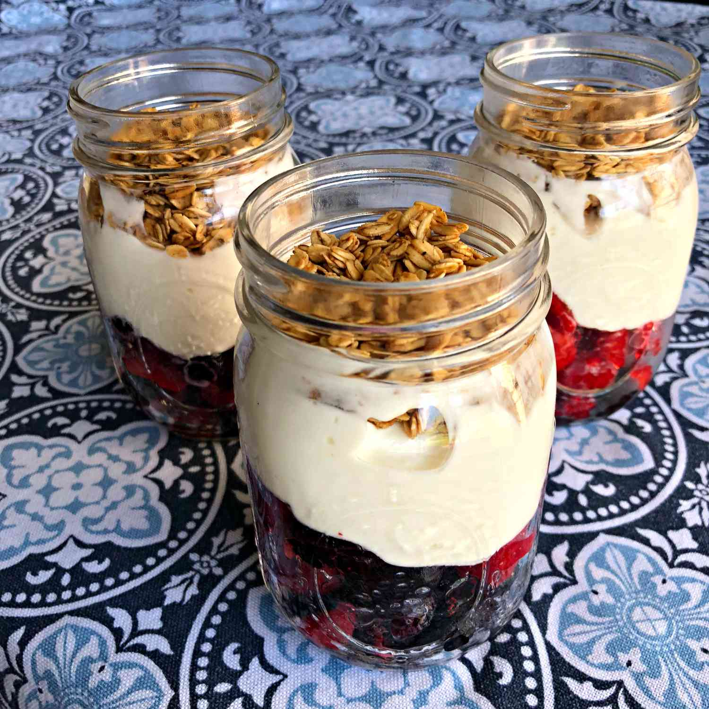

Spaghetti Aglio e Olio
- Ingredients:
- 200g spaghetti
- 4 cloves garlic, thinly sliced
- 1/4 cup olive oil
- Red pepper flakes (to taste)
- Fresh parsley, chopped
- Grated Parmesan cheese
- Instructions:
- Cook spaghetti until al dente. Drain and set aside.
- In a pan, heat olive oil over medium-low heat.
- Add sliced garlic and cook until it turns golden.
- Add red pepper flakes for some heat (adjust to your liking).
- Toss cooked spaghetti in the garlic oil.
- Serve hot, garnished with chopped parsley and grated Parmesan.

Caprese Salad
- Ingredients:
- Fresh tomatoes
- Fresh mozzarella cheese
- Fresh basil leaves
- Extra-virgin olive oil
- Balsamic vinegar (optional)
- Salt and pepper to taste
- Instructions:
- Slice tomatoes and fresh mozzarella into even slices.
- Arrange them on a plate, alternating between tomato, mozzarella, and basil leaves.
- Drizzle extra-virgin olive oil over the top.
- Optionally, add a few drops of balsamic vinegar.
- Season with salt and pepper.
- Serve as a refreshing appetizer.

Grilled Chicken Breast
- Ingredients:
- 2 boneless, skinless chicken breasts
- Olive oil
- Salt and pepper
- Paprika (optional)
- Garlic powder (optional)
- Dried thyme (optional)
- Instructions:
- Preheat your grill to medium-high heat.
- Brush chicken breasts with olive oil.
- Season with salt, pepper, and other spices if desired.
- Grill chicken for about 6-8 minutes on each side, or until no longer pink in the center.
- Let it rest for a few minutes before slicing.
- Serve with your favorite sides.

Greek Yogurt Parfait
- Ingredients:
- Greek yogurt
- Fresh berries (strawberries, blueberries, raspberries)
- Honey
- Granola
- Instructions:
- In a glass or bowl, layer Greek yogurt at the bottom.
- Add fresh berries on top of the yogurt.
- Drizzle honey over the berries.
- Sprinkle granola for some crunch.
- Repeat the layers.
- Enjoy this healthy and delicious parfait.

Avocado Toast
- Ingredients:
- 2 slices of whole-grain bread
- 1 ripe avocado
- Salt and pepper
- Red pepper flakes (optional)
- Fresh lemon juice
- Cherry tomatoes (optional)
- Instructions:
- Toast the bread until golden.
- Mash the ripe avocado and spread it on the toasted bread.
- Season with salt, pepper, and a dash of red pepper flakes for heat.
- Squeeze fresh lemon juice over the top.
- Add sliced cherry tomatoes for extra flavor.
- Serve for a quick and nutritious breakfast.

Peanut Butter Banana Smoothie
- Ingredients:
- 1 ripe banana
- 2 tablespoons peanut butter
- 1 cup milk (or milk alternative)
- Honey (optional, for sweetness)
- Ice cubes (optional)
- Instructions:
- In a blender, combine the ripe banana, peanut butter, and milk.
- Add honey for sweetness if desired.
- If you like it cold, include a few ice cubes.
- Blend until smooth and creamy.
- Pour into a glass and enjoy this delicious and protein-packed smoothie.